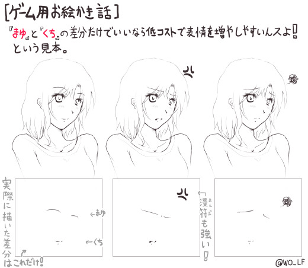
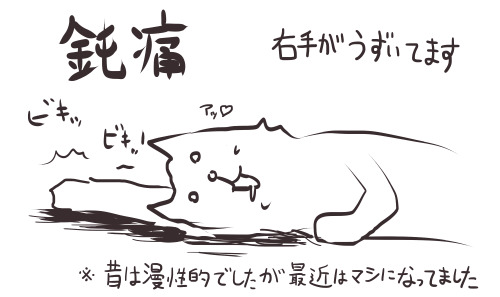
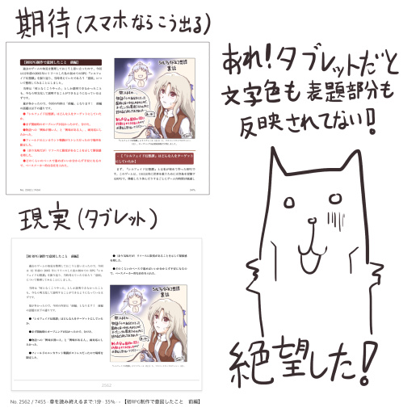
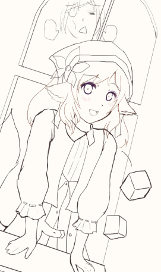

シルバーセカンド開発日誌
■
2018-07-21 (土) 夏セール＋ウディコン前夜▼【夏セールのお知らせ！】
ということで今年は夏のセールを開催します！

セール対象商品は以下の通り！
● 『シルエットノート』が1500→750円！（-50％）
→ 最近、顔グラフィックや背景画像などが「リファイン」されました！
※シルエットノートにはDLsite版もあるのですがこちらは割引申請待ちです。
そちらがほしいかたはもう少々お待ちください。
● 『シルフェイド学院物語』が2000→1000円！(-50％)
● 『片道勇者プラス』が500→250円！ （-50％）
● 『片道勇者開発記』が500→300円（Kindle版）！（-40％）
● 『ゲーム開発者の地図』（Kindle本）が1080→756円（-30％）！
期間は2018年8月下旬頃まで、となっておりますので、
気になっていた方はよければぜひ！
【ミニメタルストラップ】
またBOOTHで販売中の「ミニメタルストラップ」も、倉庫代を稼げなくなった時点で
販売終了することにしておりますので、欲しかった方はお早めにどうぞ！
微妙に売れ続けてしまったら、いわゆる「終わる終わる詐欺」が続いてしまいますが、
それはつまり、なくなるなら買っておきたい方がまだいらっしゃるということなので、
その限りは販売を続けようと思います。

【ミニメタルストラップ販売ページへ】
【明日から第10回ウディコン開催！】
ウディタ10周年に続いて、ついにウディコンも10回目になりました！
節目となる第10回、どんな作品が来るのか今からとてもドキドキしています。
【ウディコン公式ページ】
作品公開は7/22（日）の0時からです、お楽しみに！ パソコンの起動がBIOS画面から先に進まなくなったり
リカバリしようとしてもWindowsのマークが出た次に
画面が真っ暗になったきり全く進まなかったりして、
要するにパソコンが故障してしまったので
本日の開発日誌はおやすみさせていただきます。
季節柄多いとはいえ、急なHDDの故障は困りますね。
来週7/22（日）からは第10回ウディコンが始まりますので
そのタイミングで故障しなかったのは運がよかったと言えるかもしれません。
暑さのためか体も長らく不調続きなので心身パソコン共々、
バッチリ直して準備を整えたいと思います！ お楽しみに！
■
2018-06-16 (土) 地道な調整＋顔グラ小話▼【地道な調整】
現在の状況ですが、前回に引き続き
『片道勇者2』の基本処理のオーバーホール中です！
2割くらいの人に伝わればいいかなくらいの言い方になりますが、
じっくり処理を見直していると、『片道勇者2』のほぼ全ての重要箇所を制御している
「テキストスクリプトを処理する部分」が非常に重いことが分かりました。
「テキストスクリプト処理」はキャラクターの会話イベントなどの処理だけでなく、
カードの処理などもこれでおこなわれているのですが、
カード周りの初期計算を何枚分かおこなうだけで平気で20ミリ秒くらいの
時間がかかってしまうくらい負荷が高かったので、今はそこを大規模改修中です。
（毎秒60枚更新されているゲームは「1フレームあたり最大16.6ミリ秒」しかかけられないため、
1処理で20ミリ秒もかかるほど重いと処理落ちしてしまうのです）
うまくやれれば3倍以上、運がよければ5倍くらいの処理速度になりそうなので、
アルファ1の内容が『片道勇者1』に近い負荷までおさまるかもしれません。
そこから追加で状態変化の処理や新システムが入るので、
処理はまた重くなるんですけどね！
他には描画周りも最適化を試みていて、こちらも3割か4割か高速化できそうなので、
「処理が重すぎて動かないんですけど！」とフィードバックを寄せてくださった方も、
もしかしたら次のアルファ2では少しくらい動くようになるかもしれません。
色々と課題がある「ゲームシステム部分」にも早く着手したいのですが、
もうしばらくはこれらの基本処理の負荷問題への対応が続きそうです。
【おまけ ゲームのお絵かき話】
状況報告だけというのも何なので、今回はゲームのお絵かき話を一つ！
テーマは「顔グラフィックについて」で、
「実は顔のパーツの『まゆ』と『くち』の
差分だけでいいなら低コストで表情が増やせるんです！ 」
という話を説明するための見本を描いてみました。
↓
【クリックで拡大】

ゼロから描き直さなくても、「まゆ」と「くち」を変えるだけで新しい表情が生産可能！
「こんなの当たり前じゃないか！」と思われる
お絵かき担当の方も多いかもしれませんが、
どちらかというとこれは、「発注者さん」側に
知っておいてもらえるとよさそうな話です。
というのも、まだ慣れていない未熟だった頃の私のような方や、
普段は絵を描かれない発注者さんだとこれに気付いていないことが多くて、
「表情を1つ増やすために毎回ゼロから描き直したり」する判断が
頻繁に発生してしまいがちです。
そうなると作業コストが増してしまったり、
クオリティの維持も大変になってしまいます。
（※熟練のイラストレーターさんは平然とやっているように見えますが、
たとえ同じキャラクターでも、ゼロから描き直した顔を
何度も同じ度合いでかわいく/かっこよく描いたりするのも、
とても高度な技術や時間が求められる仕事です）
一方、上の見本のように「顔の方向が固定」で、
「まゆ」と「くち」（さらに追加で「目」や「漫符」）だけの変化でよいなら、
比較的簡単かつ安定して表情のバリエーションを増やすことができます。
もちろんこだわるなら全部バシッと描き直しても何も悪くないのですが、
「同じキャラの顔がなかなか同じように描けない」私のような人間だと
これはとても重宝するやり方でした。
たとえば、どうして『シルフェイド見聞録（未完）』の顔グラフィックの表情差分が
全体的に「変顔」だったかというと、この方法を知らなかったので、
あえて「変な顔」にすることで同じ顔を似せて描く必要がないように
しないといけなかったからですね！
当時の私の技量では、同じキャラであっても
2回目を書くと別人の顔になってしまっていたのです。
今でも同じキャラを同じように描くのは難しく、すごく時間がかかるので、
結果に大きな影響を与えないのならよくこの手を使わせていただいています。
また発注者のかたなら、こういったオーダーなら
絵の担当の人が忙しくても比較的通りやすいと思うので、
知っておくと演出の幅を増やせる場面があるかもしれません。
今回のは個人開発者の皆さまにもよく知られていそうなレベルの話だと思いますが、
「ゲームならでは」の効率良くやれる方法は他にも色々ありそうなので、
こういった効率化のテクニックも色々学習していきたいところです。
ゆっくり作れる状況より、急いで作らないといけない状況の方が
どうしても多いですからね！ ■
2018-06-09 (土) 休養と次の予定とセール▼【次の手へ】
ウディタの修正やら何やらたまってた宿題をバーっと片付けたら
気が抜けたのか体からダメージが急に吹き出してしまったウルフです。
適度に休憩をはさみつつ進めています。

【宿題が終わり片道勇者2へ】
ウディタは今週、追加でVer2.23に修正してひとまず一段落しており、
シルエットノートのサポート周りも陰で色々ありましたが解決したので、
やりたかった宿題らしい宿題はおおよそ片付いたと思います。
ということで、現在は久々に『片道勇者2』の作業に復帰しております！
やるべきことはフィードバック対応だけでも100点以上ありますが、
とりあえずよくない部分はよくない部分なりに色々あるとしても、
リリースをあきらめたほうがいいほどイマイチってわけではなさそうなので、
最終的に完成品を作ることを前提に、処理を再構成するところから実行中です。
つまり、アルファ用に間に合わせていた
違法建築ばりにめちゃめちゃだった基本処理周りを、
開発側として今後作りやすくできるように ＆ より処理速度が早くなるように
オーバーホールするところから始めています。
一度ザツに作ってみて必要な処理の全容が一通り分かったので、
その情報を元にきれいに作り直す感じですね！
もちろん、そういった基本部分だけでなくゲームシステム周りにも
色々な課題がありますので、順番にがんばっていきます。
【電子書籍紹介！】
いきなりですがこれまでに作った電子書籍を紹介！
スマートフォンでも読みやすいよう配慮したつもりですので、
よければ通勤通学や休憩時間のお供に！
（Amazonアカウントと、Kindleアプリのインストールが必要です）
| | 【ゲーム開発者の地図】 紹介
私がゲーム開発のときに「どんな意図をもって作っているのか」、
「効果的だと考えている手段」や「完成させる作り方とは？」、
そういった話題のゲーム開発話を色々まとめた一冊です！
この開発日誌で評判のよかった記事をまとめたものなので、
開発者でない方にもそこそこ楽しめるかもしれません。
もっぱらRPGのゲームデザインの話が多いとのことです。
|
| | 【片道勇者開発記】 紹介
『片道勇者開発記』は上と違い1作品に焦点を当てており、
『片道勇者1』だけの開発のできごとを記した一冊です！
最初に『片道勇者1』フリーゲーム版を出してからの、
海外への展開、プラス版でより面白くするための苦労話、
そこからの家庭用ゲーム機展開など、
比較的ドラマチックな開発秘話が語られます！
設定資料集やデータに対する一言ツッコミコーナー、
妖精イーリスの過去が明らかになるサイドストーリーも充実！
|
※「Kindle Unlimited」にご加入済みの方はどちらも無料で読むことができます。 ■
2018-05-12 (土) 寄り道『シルエットノート』リファイン▼
今週はなぜかちょっとだけベビーシッターしてたり、
寄り道をして『シルエットノート』のリファイン作業をしていたりしました。
狭い場所でオムツ交換する難易度の高さを思い知ったり、
本当に人肌の温度じゃないとミルクを飲まなかったり、
赤ちゃんのウマコが緑色だったことにとても衝撃を受けていました。
で、『シルエットノート』は公式サイトでの売上げが
すごく前から地の底に着いてたのと、
ご要望があったのとで、ちょっとリファイン（洗練・調整）して
ダウンロード販売サイトの『DLsite.com』さんに出してみようと考え中です。
これからの長期開発では補給が全然ないので、このタイミングで
少しでも収益アップできる可能性を用意する目的です。
すでにお買い上げくださった方にはあんまり関係ない話ですけれどね。
（DLsite.comさんにリリースした後、近いうちに
公式版もリファイン版に更新する予定です）
【新しい版の画像。最初からこんな感じだった気がしますが、比較画像は恥ずかしいので出しません】
で、リファインといっても、当時の自分の画力では微妙に崩れてた
「顔グラフィック」をいくらかまともに見えるように全体的に整形したり、
絵柄が違う「背景」を統一したり、「戦闘バランス」を少し調整したくらいです。
（内容に関しては、現代との整合が取れなくてもほぼそのまま残しています）
いま新しい方だけ触ると「最初からこんな感じだった気がする！」と
感じる程度の違いしかないと思いますが、12年前のゲームを
数週間でザッとマシにできるならまあ有りかなと思いまして。
しかし10年ぶりくらいにシルエットノートを遊んでみましたが、
個人的には、これは今でもとても面白いですね！
完全に内容を忘れていて、コーヒー飲みながらでは遊ぶことができませんでした。
ネタがあればこれくらいのものを作れるんでしょうけれど、
ネタがなくなると一気にクオリティがポンコツ化するので
コメディ的な内容は作るのが難しいジャンルです。
DLsite.comさんちに出した後、少し経ったら
公式サイト版のデータもリファイン版に更新する予定です。
来週中にはDLsite.comさんちに申請できると思いますので、
それが終わったらサポートの待機をつつ、『片道勇者2』開発や
他にも溜まっている用事を続行していきます。
（4月に『片道勇者2』の修正に集中してた影響でまだ大量に宿題が溜まっているのです）■
2018-02-03 (土) 1月の作業まとめ▼
ということでご報告する面白い内容が思いつかないので、これから毎月、
その月に進めた目立つ作業をリストアップする記事を
挟んでお茶にごししていこうと思います。
＜1月にやったこと＞
●電子書籍のサポート。
→ Kindleゲーム開発本の『片道勇者開発記』と『ゲーム開発者の地図』が
タブレット端末で正常に表示されなかったので、一通り作り直していました。
しかしアプリみたく多少おかしくても「動かない」ってことはないので、
電子書籍はいいですね！ 正常に表示されていなくても読めるのは読める。
●旧作の『片道勇者＆プラス』、バグ修正。
→ バグ修正を行いました、Steam版も修正済みです。
まだ世界には毎日50人くらいの最大同時プレイヤー数が
いらっしゃるみたいなので感謝の限りです。
●『片道勇者2』、仮タイトル画面を作りました（公開は正式版で！）。
→ 『片道勇者』の1みたく、爽やか風味で少し動きのあるタイトル画面ができました。
アルファ版では秘匿されます。
●『片道勇者2』、妖精アドバイス機能の初期版を実装。
→ 妖精アドバイスはゲームオーバー時にヒントをくれる機能です。
妖精はまだいません。
もしあなたが、他のゲームでこんな感じの機能を
そんなに多く見かけない気がするとしたら、
これが地味な割に作るのに異様に時間がかかるからだと思います。
アルファをプレイしてもらったら、フィードバックを元に
もっと強化したいところです。
また『片道勇者2』では、この妖精画面から
最新のセーブをロードする「クイックロード」が
できるようになる予定ですのでリトライも簡単になると思います。
●『片道勇者2』、死亡時演出実装（＋死因を判定する処理）を追加
→ 妖精アドバイス機能と合わせ、これによってスタートから終了までに
最低限必要な画面処理がようやく全部そろいました。
各画面のメニュー内容はだいたい3割そこそこの完成度でまだまだスカスカです。
●『片道勇者2』（というかウディタ）、インターネット送受信周りの強化
→ まだ安定化にはほど遠いですが、使い込んでみてバグなど一通り取れたなら
次バージョンの『WOLF RPGエディター』にも反映されると思います。
ファイルの「Base64での読み書き機能（画像データなどを文字列に変換して読む）」や
POST送信（容量ほぼ無制限にアップロードできる機能、従来は数KBが限度だった）が
うまくできるようになれば、あとは認証・投稿を行うPHPなどを作って
ウディタ内からTwitterに送信できたりもするはず！
『片道勇者2』ではゲーム内から画像付きツイートができるようにしたいですね。
●『片道勇者2』、バグレポート用フォームをゲーム内に実装
→ バグや感想を送れるフォームをゲーム内に作ってみました、
いつでも呼び出せますし、その時点のセーブデータや画像データも同時に送れます。
一瞬でクラッシュした場合はどうにもなりませんが、
そうでない場合は送信チャンスがあるので
バグ追跡が容易になる……といいなあと思っています。
●『片道勇者2』、これまで溜まってた小修正を山ほど修正（まだ残ってる）
→ 新しいルールだと「何ができるか分からない」部分が大量に出るので、
分かりやすさを上げるための配慮が山ほど必要になっています。
『片道勇者プラス』でさえ熱心な方から「もっとこうすれば」という
大量のご意見をいただいているので、取り入れられる分は取り入れたいですね！
●最後に。ツイッターでこっそり続投キャラアンケートしてました。
世界観の都合でそのまま出せるかは分かりませんし
結局出ないかもしれませんが、ちょっとだけご期待ください。
（たとえば後世の話になるならば「子孫」みたいな扱いになるかもしれません）
というのが、公開可能な1月の作業内容でした。
だいたい1単位あたり大きい作業で7日、小さいので2日くらいかかるので、
やれる量的にはこんなものだと思います。
2月もバリバリ進めていきたいですね！■
2018-01-13 (土) 電子書籍のサポート▼【電子書籍のサポートやサイト修正】
今週はサイトの修正や電子書籍周りのサポート対応、
セール終了の準備などで大半の時間を使った一週間となりました。
電子書籍の件ですが、前々から告知させていただいている通り、
『片道勇者開発記』の「ゲーム版」のほうは
セールが終わった時点、早ければ1/15には販売を一時停止します。
もし欲しい方がいらっしゃいましたらお早めに！
「ゲーム版」の販売が止まっても、「Kindle版」は継続して販売されます。
【そしてKindle書籍のサポート】

実は、Kindle版の『片道勇者開発記』などを
「Page Flip」というKindleアプリ固有の機能が働く端末（タブレットなど）で見ると
どうやら設定されているスタイルシート（デザインを決めるデータ）の読み込みが
無効になってしまうらしく、どの文字が項目タイトルなのかも
分かりづらくなってしまうという辛い状況になってしまっていました。
そんなわけでKindle版のデータを一度全部作り直してアップしたり
うまく表示されるよう色々試したりしていたのが今週の主な仕事です。
手元のiPadで見た感じだと、ひとまず『片道勇者開発記』も
『ゲーム開発者の地図』も期待通りに出るようになりました。
最新のKindleアプリならファイルが自動更新されるようになっているので、
読みにくかったなあとお思いだった方にもそのうち最新版が配信されると思います。
ご迷惑をお掛けしてしまって申し訳ございません。
【ゲーム開発者の地図 公式ページ！】
あまり必要なさそうかなとも思いつつ、
『ゲーム開発者の地図』の公式ページを作成しました！
新しくサイトにいらしてくださった方に、いちおうの主流作品の一つとして
ご紹介する目的で並べております。
【ゲーム開発者の地図 公式ページ】

「電子書籍」は作ってから出すまでのスパンが比較的短く、
ゲームよりは人生を賭けずに制作コストを回収しやすいので、
今後も何かしら定期的に本を出してもいいかもしれない、と少し考えています。
一方の「ゲーム」の方は、内容自体をシクったり、たまたまものすごく売れなかったり、
値段の付けミスをしただけでも人生が傾くのでヤバい！
主砲としてのゲームと、副砲としての電子書籍、みたいな形で
うまいこと生活の足しにできたらいいんですけれど、
さすがに本のほうは売り方も知名度も初心者レベルなのもあって
今のところバズる（急に話題になる）ほどの気配も特にないので、
ときどきアピールしつつ、売り方も学びつつ、地道にやっていきたいと思います。
読んでくださっている皆さま、感想をくださる皆さまには本当に感謝の限りです！
何か話題性のある本を作れて継続収入になれば
ゲーム開発にも集中しやすくていいんですけれど、
前回の『片道勇者開発記』もどうにもタイミングを逃した感があって、
うまいタイミングや出し方で出すのは自分にとってはまだまだ修行が必要そうです。
とにかく、色々な方面で自分が自然に品質よく作っていけるものを活用して、
継続して生きていくための努力や工夫をしていきたいですね。
当面は主にゲーム開発のターンで、ごくたまに副業もしつつ、
『片道勇者2』の開発にほぼ全てのリソースを投入していきたいと思います。
よければ今後とも、よろしくお願いいたします。 ■
2018-01-01 (月) 2018年あけまして！▼【2018年あけまして！】
ということでとうとう2018年を迎えることができました。
皆さま、あけましておめでとうございます！

※直近の犬キャラはたぶん『プラネットハウル』よりウォーです。
今年の目標は、
●『片道勇者2』、アルファは当然出す。
●『片道勇者2』のベータまでいけたらいいけど無理はしない。
●その間なんとか生き延びる。
です！ シンプルとはいえゲームを一本作る作業量は膨大なので
展開がどんなテンポになるかは未知数です。
今は世の中にゲームが溢れすぎているので、急いで変なものを出すよりは、
じっくり面白いものを出した方が喜ぶ人も増えるだろうと考えています。
できそうならば、今作は自分で遊んでもずっと遊べそうな一作を目指したいですね！
それでは、今年も一年、よろしくお願いします！
当サイトの有料作品セールも1/14過ぎまでやっていますので、
よければぜひ！ ■
2017-12-16 (土) 19周年セール！▼【19周年セール開始のお知らせ！】
ということで今年もシルバーセカンド19周年セールを行います！

セール対象商品は以下の通り！
● 『シルエットノート』が1500→500円！（-66％）
● 『シルフェイド学院物語』が2000→1000円！(-50％)
● 『片道勇者プラス』が500→200円！ （-60％）
● 『片道勇者開発記』が500→300円（ゲーム版・Kindle版共に）！（-40％）
● 『ゲーム開発者の地図』（Kindle本）が1080→810円（-25％）！
期間は2018年1月上旬頃まで、となっておりますので、
気になっていた方はよければぜひ！
【『片道勇者開発記』ゲーム版、
2018年1月中旬より一時販売停止のお知らせ】
それと、悲しいお知らせというわけでもないのですが、
『片道勇者開発記』のゲーム版の方のみ、
今回のセールが終了した時点で【3ヶ月ほど販売停止】にする予定です。
というのも、ここ数ヶ月の「片道勇者開発記 ゲーム版」の
販売本数を確認したところ、3ヶ月分を足しても1桁しか売れていなかったので、
それならいっそAmazonのKindle版のみに集中した方が私が生き残れる確率も上がるし、
Unlimitedの無料サービスでも読めるようになるので、
結果的に読んでくださる方も増えていいだろう、という判断です。
ただしその場合、最低3ヶ月はAmazon独占販売を続ける必要があります。
そんなわけで、セールが終わったら
『片道勇者開発記』をしばらくはAmazon Kindle独占販売にして、
様子見をしてみようと考えています。
つまるところ、ゲーム版の希少価値がほんの少し上がるので、
『片道勇者開発記』のゲーム版が欲しい方はよければ今のうちにぜひ！
というお知らせでした。
とはいえ、Amazon独占販売期間の1単位である「3ヶ月」が終わったら、
独占販売の自動更新を切るのを忘れていなければ
またゲーム版を一時販売再開する予定でいます。
（忘れてたり、今回のセールでもほぼ数字が動かないようならもう3ヶ月伸びるかも）
今後は、ゲーム版の方は「期間限定販売」のような感じにすると思います。
もともとKindleのような安全な電子出版を行う方法を知らなくて
最初に作ったのが「ゲーム版の片道勇者開発記」でしたので、
これはこれでいい収まり方なのかもしれません。
けれども、BGMやエンドロールが付いてる開発記は
『片道勇者開発記 ゲーム版』だけなので、
そういった演出も込みでお楽しみになりたい方はこの機会にぜひどうぞ。
【そして12/24、ついに19周年に！】
↓TRPG版ネムリ、空き時間で19周年お絵かきも描いてます

そして来たる12/24に、当サイトはいよいよ19周年を迎えます！
よくよく考えるとものすごく長い道のりになっていますが、
来てみるとあっという間でした。
来週の記事で今年1年を振り返ってみて、それをもって
今年最後の開発日誌とさせていただくことになると思います。
残り二週間、引き続き開発もがんばっていきます！
体調を崩されている方が多いので、皆さまお体にはどうかお気を付けて！
Copyright © SmokingWOLF / Silver Second
 カテゴリ: 開発日誌
カテゴリ: 開発日誌 カテゴリ: 開発日誌
カテゴリ: 開発日誌